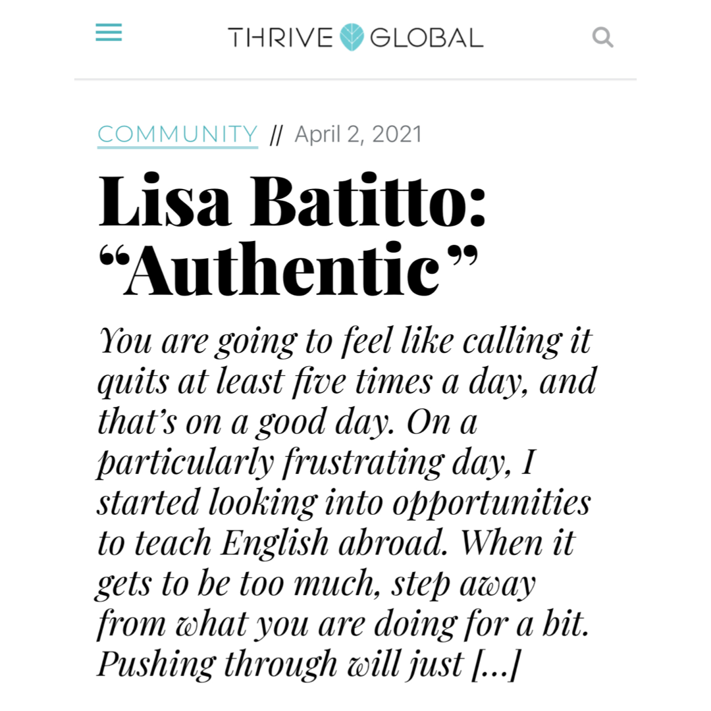

Akashic Records & Intuition
Akashic Records & IntuitionConnecting with Your Spirit Guides
Even when you’re alone, you’re not by yourself.
Read BlogBlog
Thoughts on healing, spiritual life, work, and being human, written by Lisa Batitto with occasional guest contributions.
Browse
Blog
Akashic Records & IntuitionEven when you’re alone, you’re not by yourself.
Read Blog Healing & Spiritual Growth
Healing & Spiritual GrowthYou remember it so clearly.
Read Blog Akashic Records & Intuition
Akashic Records & IntuitionImagine that you have an entire team behind you that has your best interests at heart, always supports you, and loves you unconditionally.
Read Blog
Healing & Spiritual GrowthI'm walking on sunshine.
Read Blog Healing & Spiritual Growth
Healing & Spiritual GrowthYou are going to feel like calling it quits at least five times a day, and that’s on a good day.
Read Blog Healing & Spiritual Growth
Healing & Spiritual GrowthI talk a lot about personal power in my blog and in sessions with clients.
Read Blog Healing & Spiritual Growth
Healing & Spiritual GrowthI've been thinking lately about the concept of loving every person I meet, even people who are difficult or toxic.⠀ ⠀ You know the story: no matter how hard you try or how much love you throw at them, they are harmful to your well-being.
Read BlogWhile on the path to becoming a healer, I became a small business owner.
Read BlogM any successful people reinvented themselves in a later period in their life.
Read Blog Healing & Spiritual Growth
Healing & Spiritual GrowthI recently wrote about the benefits of working with an energy healer.
Read Blog Reiki & Energy Healing
Reiki & Energy HealingHave you ever worked with an energy healer?
Read Blog Healing & Spiritual Growth
Healing & Spiritual GrowthI live on the East Coast and March is always a roller coaster ride of weather.
Read BlogServices
Learn about Reiki, Akashic Records, meditation, Work Trauma Coaching, and Corporate Wellness.
View Services